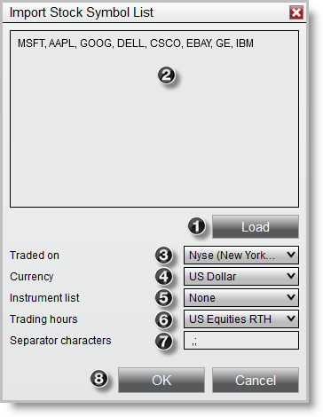

|
<< Click to Display Table of Contents >> Importing a List of Stock Symbols |


|
Importing a List of Stock Symbols
|
<< Click to Display Table of Contents >> Importing a List of Stock Symbols |
|
Importing a Stock ListImporting a list of stock symbols is an efficient way to add instruments to the instruments database in bulk.
Within the Control Center window select the Tools menu. Then select the menu item Import and left mouse click on the menu item Stock Symbol List...
The text file must contain valid symbols separated by either -
•User defined character such as a semicolon or comma •White space •Carriage return
Enter any user defined separator characters Press the OK button to import

|